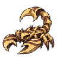

No.050
サハリ
灯 通常
尾の水晶に砂漠の日差しを蓄える。夜は柔らかい灯台になる。
基本データ
| 図鑑番号 | No.050 |
|---|---|
| タイプ | 灯タイプ |
| 進化 | 進化しない |
| 入手方法 | 砂鈴の集落（Lv.19〜22）、陽炎の砂海（Lv.19〜22）の草むらに出現。 |
Lv.50の能力値
| 体力 | 290 | |
|---|---|---|
| 物理攻撃 | 179 | |
| 物理防御 | 126 | |
| 特殊攻撃 | 178 | |
| 特殊防御 | 130 | |
| 素早さ | 120 | |
| 命中 | 100 | |
| 回避 | 99 |
冒険中の能力値はレベルに応じて上がります。オンライン対戦の通常レンタルはLv.50で統一されます。
覚える技
| 技 | タイプ | 分類 | 威力 | 命中 | PP | 効果 |
|---|---|---|---|---|---|---|
| 陽炎の冠 | 灯 | 物理 | 42 | 90 | 10 | 灯の力で打ち込む強力な物理攻撃。10%で灯焼けにすることがある。 |
| 熾火の刻印 | 灯 | 物理 | 30 | 97 | 20 | 灯の力で守りを貫く物理攻撃。防御の技による軽減を受けない。10%で灯焼けにすることがある。 |
| 翡翠の根 | 芽 | 物理 | 33 | 96 | 15 | 芽の力を込めた物理攻撃。威力と命中のバランスがよい。10%で花毒にすることがある。 |
| 静寂のまもり | 無 | 防御 | — | — | 15 | 心を静めて構え、次に受ける攻撃のダメージを半分にする。素早さに関係なく先に構える。 |
タイプ相性
灯タイプの技は芽タイプに強く（1.5倍）、潮タイプの技を受けると効果が大きくなります。同じタイプの技を使うと威力が1.15倍になります。